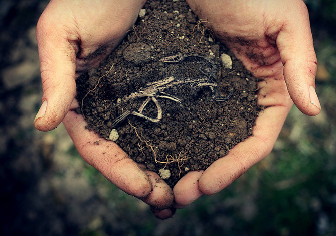

Toprağın ne olduğu, oluşumu, bileşenleri ve genel özellikleri hakkında temel bilgi.
İlk konu olan "Toprağın Tanımı ve Özellikleri" toprağın ne olduğu ve temel özellikleriyle ilgili. Toprak, kayaların fiziksel parçalanması, kimyasal bozunması ve organik madde katılmasıyla oluşan bir karışımdır.
Toprağın Ana Bileşenleri:
Mineraller: Kuvars, feldispat, kil gibi inorganik maddeler.
Organik Maddeler: Bitki ve hayvan kalıntılarından gelen organik materyal.
Hava: Toprak içinde bulunan boşluklar aracılığıyla köklere ve diğer organizmalara oksijen sağlar.
Su: Bitkilerin büyümesi için gereklidir ve topraktaki minerallerin çözünmesine yardımcı olur.
Toprağın Özellikleri:
Renk: Toprağın rengi, içerdiği mineraller ve organik maddeler tarafından belirlenir. Farklı renkler farklı bileşenlere işaret edebilir.
Yapı: Toprağın parçacıklarının düzeni ve yapıları, suyun tutulması, hava geçirgenliği gibi faktörleri etkiler.
Tekstür: Parçacık boyutu ve bileşimi, toprağın tekstürünü belirler. Kumlu, killi, tınlı gibi farklı tekstürler bitki yetiştirme yeteneklerini etkiler.
Derinlik: Toprağın ne kadar derine kadar farklı özellikler gösterdiği, köklerin nereye kadar ulaşabileceğini belirler.
Toprak, bitkilerin büyümesi için gerekli olan mineralleri ve besinleri içerir. Bu özellikleriyle toprak, tarım, ekoloji, jeoloji ve çevre bilimleri gibi birçok alanda önemli bir rol oynar.
Bilgi Almak İçin Tıkla